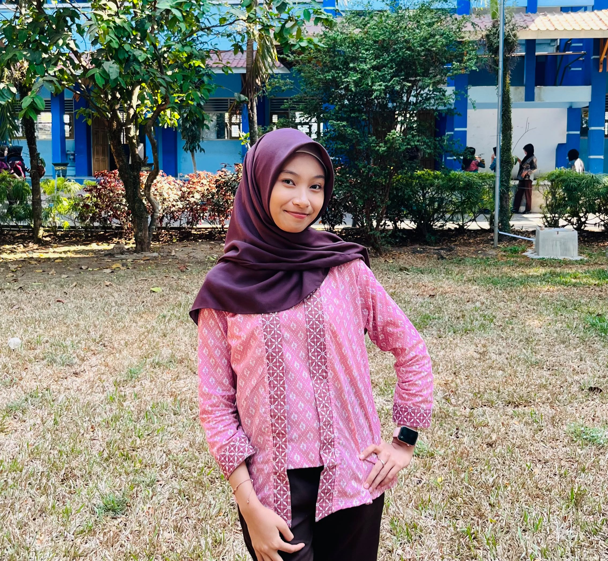

Halo, saya Aulia!
Siswi kelas X PPLG 1 SMKS Brantas Karangkates, calon Junior Web Developer di Kelas Industri UBIG.
Lihat Proyek SayaTentang Saya
Saya tinggal di Blitar dan senang mencoba hal baru di dunia teknologi. Saya ingin bisa membuat website yang bermanfaat untuk sekolah dan UMKM di sekitar rumah.
Hobi
- Mendengarkan musik
- Menonton Film
- Mendesain poster
Cita-cita
Menjadi Front-end Web Developer. Langkah yang saya rencanakan:
- Menuntaskan Kelas Industri UBIG sampai Semester 4
- Magang di perusahaan teknologi
- Bekerja sebagai Front-end Web Developer
Keahlian
- HTML dasar (sedang dipelajari)
- Mengetik cepat
- Desain poster dengan Canva
Jadwal Belajar
| Hari | Waktu | Kegiatan |
|---|---|---|
| Senin | 19.00 - 20.00 | Membaca ulang modul |
| Selasa | 19.00-20.30 | Mengerjakan tugas sekolah |
| Rabu | 19.00 - 21.00 | Mengerjakan tugas praktik |
| Kamis | 19.00-20.00 | Mengulang materi yang belum paham |
| Jumat | 19.30 - 20.30 | Merekam video dan menulis laporan |
| Sabtu | Fleksibel | Mengerjakan proyek atau tugas yang tertunda |